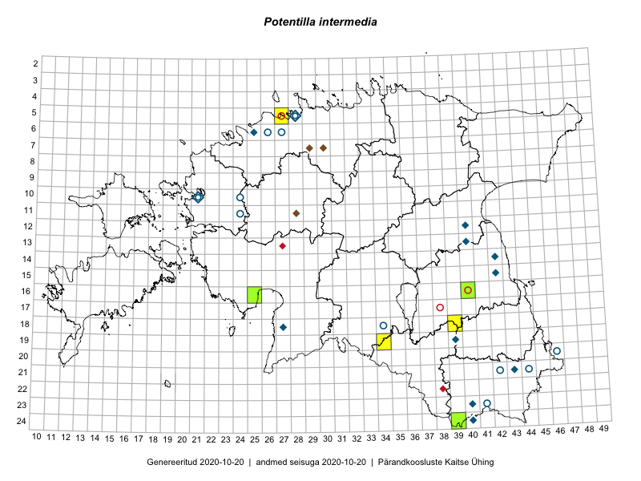

Potentilla intermedia
Uuendatud: 2016-12-02
Kaardile koondatud taksonid: Potentilla intermedia L.

Kaart põhineb 4 kirjel, neist vaatlusi 2 ja eksemplare 2. Taksonit on leitud 3 ruudust.
Viited andmebaasikirjetele